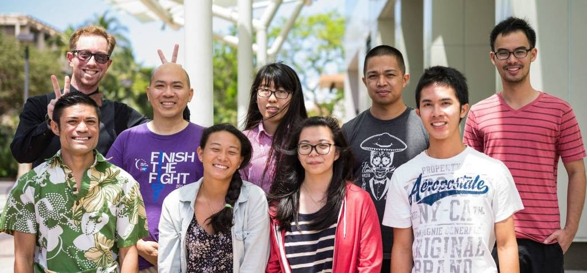

Hi, thank you for visiting my site.
I am a Ph.D. candidate at Biochemistry and Molecular Biophyics department in Kansas State University.
My major professor is Prof. Ho Leung Ng.
I am currently working on using computational methods to study biological systems. One of the projects I am studying is the proctolin receptor, which is G-protein coupled receptor is one of projects.
I am study the mechanism of binding between proctolin receptor and proctolin by using different docking methods and MD simulations.
Educations
-
Ph.D. candidate, Biochemistry and Molecular Biophysics
- Kansas State University, Manhattan, KS2021
- Advisor: Prof. Ho Leung Ng
- Thesis: The study of G-protein coupled receptor
-
- M.S., Physical Chemistry
- Hebei University, China2014
- Advisor: Prof. Gang Ma
-
- B.S., Chemical Engineering
- Henan University of Science and Technology, China2009

Publications
- Ye Zou, John Ewalt, Ho-Leung Ng, Recent Insights from Molecular Dynamics Simulations for G Protein-Coupled Receptor Drug Discovery. International Journal of Molecular Sciences. 20.17 (2019):4237.
- Rongbing Yang, Kihoon Nam, Sung Wan Kim, James Turkson, Ye Zou, Yi Y Zuo, Rahul V Haware, Mahavir B Chougule, Factorial design based multivariate modeling and optimization of tunable bioresponsive arginine grafted poly (cystaminebis (carylamide)-diaminohexane) polymeric matrix based nanocarriers. Molecular Pharmaceutics 14.1 (2017): 252-263.
- Yachao Gao, Ye Zou, Yan Ma, Dan Wang, Ying Sun, Gang Ma, Infrared probe technique reveals a millipede-like structure for Aβ (8-28) amyloid fibril. Langmuir. 32.4 (2016): 937-946.
- Chikara Otsubo, Sivakama Bharathi, Radha Uppala, Olga R llkayeva, Dongning Wang, Kevin McHugh, Ye Zou, Jieru Wang, John F Alcorn, Yi Y Zuo, Matthew D Hirschey, Eric S Goetzman, Long-chain acylcarnitines reduce lung function by inhibiting pulmonary surfactant. Journal of Biological Chemistry. 290.39 (2015): 23897-23904.
- Ye Zou, Wenying Hao, Haoyi Li, Yachao Gao, Ying Sun, Gang Ma, New insight into amyloid fibril formation of hen egg white lysozyme using a two-step temperature-dependent FTIR approach. The Journal of Physical Chemistry B. 118.33 (2014), 9834-9843.
- Ye Zou, Gang Ma, A new criterion to evaluate water vapor interference in protein secondary structural analysis by FTIR spectroscopy. International Journal of Molecular Sciences. 15.6 (2014):10018-10033.
- Ying Sun, Ye Zou, Gang Ma, A convenient and cost-effective fourier transform infrared (FTIR) spectrometer purging setup for the undergraduate teaching laboratory. Journal of CHemical Education. 90.7 (2013): 950-951.
- Ye Zou, Yiyi Li, Wenying Hao, Xiaoqian Hu, Gang Ma, Parallel β-sheet oligomer: new insights into amyloid formation of hen egg white lysozyme under heat and acidic condition from FTIR spectroscopy. The Journal of Physical Chemistry B. 117.15 (2013): 4003-4013.
- Gang Ma, Yiyi Li, Jun Dong, Ye Zou, The dynamic nature of incubation solution after cooling to room temperature in amyloid formation of hen egg white lysozyme: an FTIR assessment. Vibrational Spectroscopy64 (2013):44-50.
Contact
Chalmers Hall, Room 33
Kansas State University
Manhattan, KS 66506
Email: yezou@ksu.edu
© 2021 Ye Zou